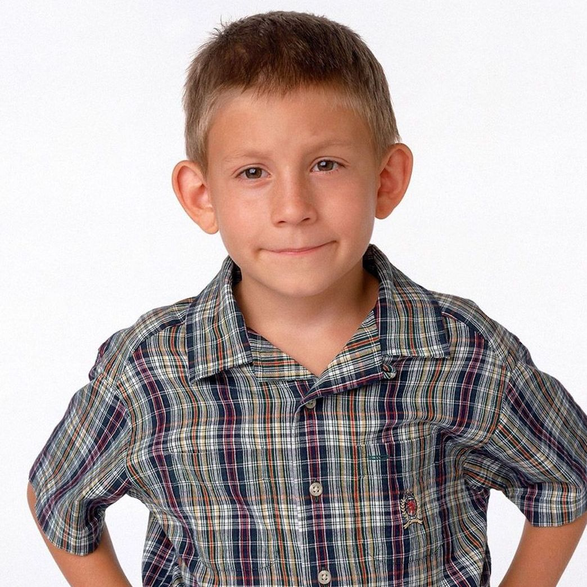
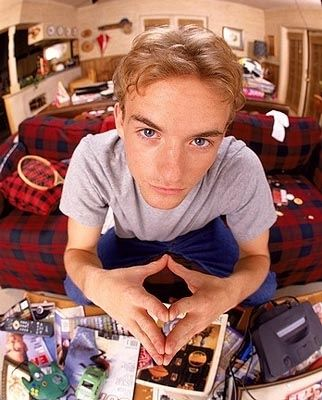

Malcom es una serie que trata sobre la vida de un niño del mismo nombre el cual es parte de una familia disfuncional, en la cual el es el 3er hijo de 4 hijos, su mamá es la persona que manda en la casa, su papa es un hombre trabajador pero algo torpe, su hermano mas grande, Francis, fue enviado a una Universidad militar, su otro hermano mayor, Resee, es un chico maleducado el cual lo molesta, y su hermano menor, Dewey, es un niño el cual lo mete a veces en problema, despues de un test de inteligencia, descubren que Malcom es un genio y lo mandan a un salón de clases especial.
| Malcolm | Resee | Dewey | Lois | Hal | Francis |
|---|---|---|---|---|---|
| { max-width: 100% } | { max-width: 100% } |  | { max-width: 100% }{ max-width: 100% } | | {
max-width: 100%
}
 | { max-width: 100% }
| Malcolm es el personaje principal de la serie, es un genio con un caracter muy duro | Resee es un chico el cual es problematico, usualmente molesta a los demas | Dewey es un niño el cual es muy astuto y tiene una imaginacion muy activa | Lois es la mamá de la familia, tiene un temperamento muy explosivo y trabaja en una tienda de conveniencia | Hal es el papá de la familia, es un hombre el cual ama mucho a su esposa y se preocupa por su familia | Francis es el mayor de los 4 hijos, era una persona muy problematica y por eso lo mandaron con los militares |